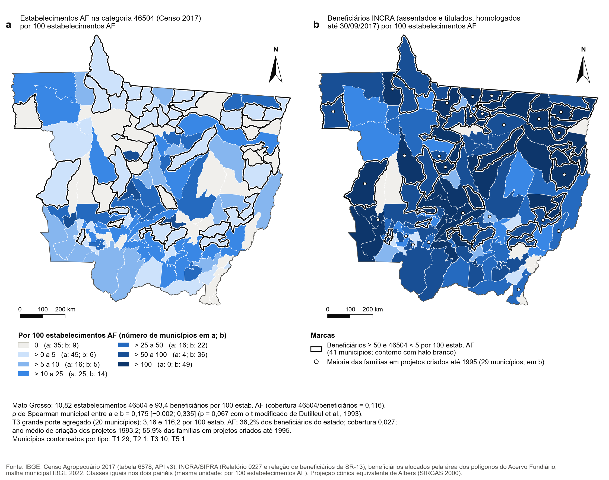
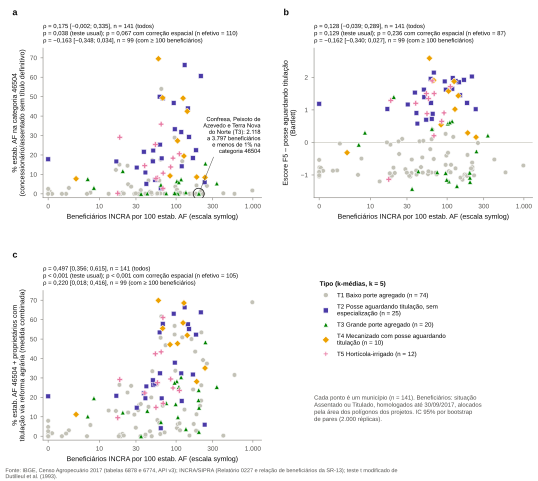

Versão preliminar para a equipe do projeto. Os resultados estão sujeitos a alteração à medida que as etapas do estudo forem concluídas.
Posse no Censo Agropecuário e reforma agrária
Categoria 46504 do Censo Agropecuário 2017 e reforma agrária: resultados do Manuscrito 1, em preparação
Confronto entre a categoria do Censo 2017 de concessionário(a) ou assentado(a) aguardando titulação definitiva e os registros do INCRA
Contextualização e objetivo
O Censo Agropecuário, realizado pelo Instituto Brasileiro de Geografia e Estatística (IBGE), questiona o produtor sobre a condição em que ocupa as terras, e uma das respostas possíveis é concessionário(a) ou assentado(a) aguardando titulação definitiva (Censo 2017), que corresponde à categoria 46504 do Sistema IBGE de Recuperação Automática (SIDRA). Trata-se, portanto, de uma condição declarada. Cumpre destacar que o Censo não pergunta se o estabelecimento pertence à reforma agrária e que o produtor que já recebeu o título pode declarar-se proprietário. Nesse contexto, esta página examina, com base nos resultados do Manuscrito 1, em que medida a categoria capta a reforma agrária em Mato Grosso (MT).
Dados e fontes
A análise confronta três conjuntos de registros. O primeiro corresponde aos estabelecimentos na categoria censitária publicados pelo IBGE, considerados tanto na agricultura familiar (AF) quanto no conjunto dos estabelecimentos (AF e não AF). O segundo refere-se aos estabelecimentos da reforma agrária identificados no Censo pelo IBGE em conjunto com o Instituto Nacional de Colonização e Reforma Agrária (INCRA), por critérios múltiplos. O terceiro reúne os registros administrativos do INCRA, isto é, os projetos de reforma agrária do Sistema de Informações de Projetos de Reforma Agrária (SIPRA) e a relação de beneficiários da Superintendência Regional do INCRA em MT. Os cartões a seguir apresentam a magnitude de cada registro no estado.
Estab. da AF na categoria 46504
8.834
Área da AF na categoria 46504
397.305 ha
Estab. na categoria 46504, AF e não AF
11.248
Estab. da reforma agrária no Censo
42.014
Projetos de reforma agrária
575
Beneficiários do INCRA
76.247
Fonte: Manuscrito 1 do Projeto RESA (em preparação), Tabela 1 e nota da Tabela A.15; dados do IBGE, Censo Agropecuário 2017; INCRA/SIPRA, Relatório 0227; INCRA, relação de beneficiários da reforma agrária em MT (Superintendência Regional SR-13; assentados e titulados homologados até 30/09/2017), utilizada apenas em contagens agregadas por município, sem dados pessoais; Marques (2021), tabulação IBGE-INCRA do Censo 2017. Os números foram transcritos dos resultados finais do manuscrito, sem recálculo.
Cobertura da reforma agrária pela categoria
A Figura 1 sintetiza o principal resultado do confronto: a categoria 46504 capta, no máximo, 26,8% da reforma agrária identificada no Censo.
Ainda que todos os 11.248 estabelecimentos da categoria 46504 pertencessem à reforma agrária, eles representariam apenas 26,8% dos 42.014 que o IBGE e o INCRA identificaram no Censo 2017. Dessa forma, pelo menos 30.766 (73,2%) ficam fora da categoria.
Na agricultura familiar, a cobertura da categoria em relação aos beneficiários do INCRA é de 0,116 em MT, o que corresponde a 8.834 estabelecimentos para 76.247 beneficiários. Além disso, muitos titulados declaram-se proprietários: 10.479 estabelecimentos da AF de proprietários obtiveram a terra por titulação ou licença da reforma agrária (Censo 2017, tabela 6774). Somados à categoria 46504, esses estabelecimentos formam a medida combinada, que abrange 23,66% dos estabelecimentos da AF.
Fonte: Manuscrito 1 do Projeto RESA (em preparação), nota da Tabela A.15; dados do IBGE, Censo Agropecuário 2017; INCRA, relação de beneficiários da reforma agrária em MT (Superintendência Regional SR-13; assentados e titulados homologados até 30/09/2017), utilizada apenas em contagens agregadas por município, sem dados pessoais; Marques (2021). Os números foram transcritos dos resultados finais do manuscrito, sem recálculo.
Comparação municipal entre o Censo e o INCRA


Fonte: Elaboração dos autores do Manuscrito 1 com base em IBGE, Censo Agropecuário 2017; INCRA/SIPRA, Relatório 0227; INCRA, relação de beneficiários da reforma agrária em MT (Superintendência Regional SR-13; assentados e titulados homologados até 30/09/2017), utilizada apenas em contagens agregadas por município, sem dados pessoais. Nota: na legenda da figura, os tipos aparecem com outra redação de rótulo, igualmente provisória. Os tipos são os mesmos (T1 a T5, com os mesmos municípios); neste site, adota-se a redação da tabela, acompanhada do selo “rótulo provisório”.
Conforme a Figura 2, os padrões espaciais dos dois mapas divergem: onde o INCRA registra muitos beneficiários, o Censo frequentemente registra poucos estabelecimentos na categoria. Com efeito, 41 municípios têm 50 ou mais beneficiários por 100 estabelecimentos da AF e menos de 5% da AF na categoria, sendo 29 no T1, 1 no T2, 10 no T3 e 1 no T5. No sentido inverso, isto é, com a categoria na média de MT ou acima dela e menos de 10 beneficiários por 100 estabelecimentos da AF, há 1 município (Tesouro).
Validação externa
Caso a categoria medisse a reforma agrária, os municípios com mais beneficiários do INCRA deveriam apresentar mais estabelecimentos na categoria. Contudo, conforme a Tabela 1, a associação é fraca e perde significância quando se controla a autocorrelação espacial, isto é, a semelhança entre municípios vizinhos, por meio do teste t modificado de Dutilleul.
Nota: ρ de Spearman entre cada medida e os beneficiários do INCRA por 100 estabelecimentos da AF [IC 95% por bootstrap]; p corrigido para a autocorrelação espacial (Dutilleul). Medida combinada: categoria 46504 somada aos proprietários titulados pela reforma agrária.
Fonte: Manuscrito 1 do Projeto RESA (em preparação), Tabela A.15; dados do IBGE, Censo Agropecuário 2017; INCRA, relação de beneficiários da reforma agrária em MT (Superintendência Regional SR-13; assentados e titulados homologados até 30/09/2017), utilizada apenas em contagens agregadas por município, sem dados pessoais. Os números foram transcritos dos resultados finais do manuscrito, sem recálculo.
Observa-se que a medida combinada acompanha melhor os registros do INCRA (ρ = 0,497 em todos os municípios) do que a categoria isoladamente (ρ = 0,175). A Tabela 2 detalha os indicadores de validação por tipo.
Fonte: Manuscrito 1 do Projeto RESA (em preparação), Tabela A.15; dados do IBGE, Censo Agropecuário 2017; INCRA/SIPRA, Relatório 0227; INCRA, relação de beneficiários da reforma agrária em MT (Superintendência Regional SR-13; assentados e titulados homologados até 30/09/2017), utilizada apenas em contagens agregadas por município, sem dados pessoais, alocada pela área dos polígonos dos projetos. Os números foram transcritos dos resultados finais do manuscrito, sem recálculo.
Os resultados por tipo revelam padrões distintos. O T3 reúne 36,2% dos beneficiários do INCRA de MT, mas a cobertura da categoria é de apenas 0,027; além disso, seus projetos são mais antigos, com ano médio de criação de 1993,2 e 55,9% das famílias em projetos criados até 1995. Ressalta-se, assim, que a posse “baixa” do rótulo é a declarada ao Censo. No T4, 44,0% dos beneficiários já estão titulados no SIPRA, a maior proporção entre os tipos, e, com a inclusão dos titulados, a cobertura sobe para 0,453. No T2, 32,8% das famílias estão em projetos estaduais, ao passo que o T5 apresenta o menor número de beneficiários por estabelecimento da AF (58,4 por 100). A Figura 3 permite visualizar essas associações município a município.


Fonte: Elaboração dos autores do Manuscrito 1 com base em IBGE, Censo Agropecuário 2017 (tabelas 6878 e 6774); INCRA, relação de beneficiários da reforma agrária em MT (Superintendência Regional SR-13; assentados e titulados homologados até 30/09/2017), utilizada apenas em contagens agregadas por município, sem dados pessoais. Nota: na legenda da figura, os tipos aparecem com outra redação de rótulo, igualmente provisória. Os tipos são os mesmos (T1 a T5, com os mesmos municípios); neste site, adota-se a redação da tabela, acompanhada do selo “rótulo provisório”.
Sigilo estatístico na categoria
O IBGE omite, com o sinal X, as células que poderiam identificar um informante. Na categoria 46504, o número de estabelecimentos não apresenta X, com 106 municípios com valor e 35 com – (zero absoluto). A área, em contrapartida, apresenta X em 52 municípios, de modo que 44.431 ha (11,2% da área da categoria em MT) ficam sob sigilo. O pessoal ocupado, por fim, apresenta X em 50 municípios.
Por essa razão, a % de área da categoria por tipo considera apenas os municípios sem X (ver, na página da tipologia, a tabela de perfil dos tipos, que reproduz a Tabela 3 do manuscrito). Neste site, o sinal X nunca é convertido em zero.
O caso de Juara, sede do projeto de assentamento (PA) Vale do Arinos, constitui um exemplo de reforma agrária fora da categoria. O município aparece com – (zero absoluto) na categoria 46504, isto é, o Censo não registrou nenhum estabelecimento da AF nessa condição, embora o município tenha projetos de assentamento no SIPRA.
Fonte: Manuscrito 1 do Projeto RESA (em preparação), Tabela 1; dados do IBGE, Censo Agropecuário 2017; Juara: dados deste observatório (Censo 2017, tabela 6878; INCRA/SIPRA, 2025). Os números foram transcritos dos resultados finais do manuscrito, sem recálculo.
Indicadores de posse por tipo
A Tabela 3 reúne os indicadores da categoria censitária e do SIPRA agregados por tipo.
Agregados: soma dos municípios, para os totais; razão das somas, para as proporções e médias; e variação das somas, para a dinâmica. * O grupo contém municípios com X (sigilo); o valor considera apenas os municípios com valor publicado.
Dados municipais: Censo 2017 e SIPRA
A Tabela 4 apresenta os dados de cada município, que podem ser pesquisados pelo nome. A categoria 46504 provém do Censo de 2017, ao passo que os projetos e as famílias provêm do SIPRA, com posição de 2025, e contabilizam os projetos com sede no município. Como os anos de referência diferem, a tabela presta-se à comparação da ordem de grandeza, e não a operações aritméticas entre as fontes.
O município não é a área-piloto.
Os indicadores descrevem o município inteiro (ou o conjunto de sua agricultura familiar) e, portanto, fornecem o contexto das áreas-piloto, sem medi-las.
Sinais convencionais do IBGE:
X
sigilo (dado omitido para evitar a identificação do informante) ·
–
zero absoluto ·
...
não disponível. Na exibição, nenhum desses sinais é tratado como zero.
Fonte: IBGE, Censo Agropecuário 2017, SIDRA, tabela 6878; INCRA/SIPRA, Relatório 0227 (posição de 03/06/2025). Bioma dominante: IBGE, Biomas 1:250 mil (2019). Tipos municipais: Manuscrito 1 do Projeto RESA (k = 5; rótulos provisórios). Nos agregados, o sinal – (zero absoluto) é computado como zero, e os sinais X e ... são excluídos. Detalhes na página Dados.
Considerações finais
Em síntese, a categoria censitária mede uma condição declarada e capta apenas parte da reforma agrária identificada no Censo, o que se evidencia tanto no agregado estadual quanto nas comparações municipais e por tipo. A medida combinada, que inclui os proprietários titulados pela reforma agrária, acompanha melhor os registros do INCRA do que a categoria isoladamente, cuja associação com esses registros é fraca e perde significância quando se considera a autocorrelação espacial.
Como limitações, destaca-se que a área e o pessoal ocupado da categoria estão sujeitos ao sigilo estatístico e que o Censo e o SIPRA têm anos de referência distintos. Desse modo, a categoria censitária deve ser interpretada como condição declarada de posse, e não como medida da reforma agrária, o que exige o confronto com os registros administrativos sempre que o objeto de análise for a reforma agrária.